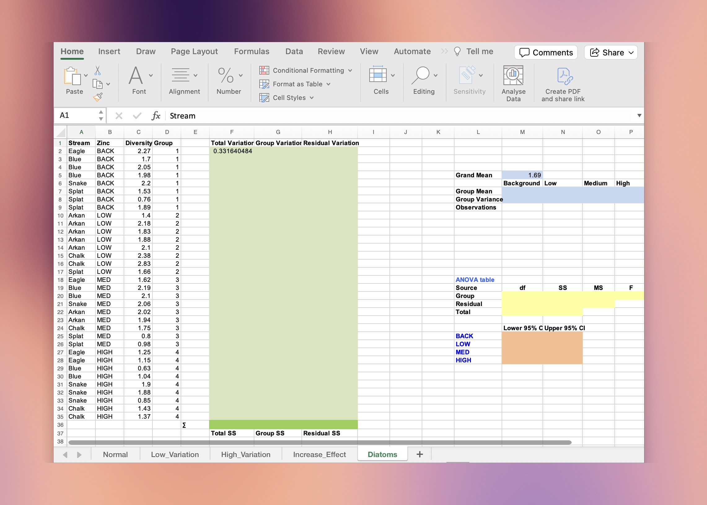
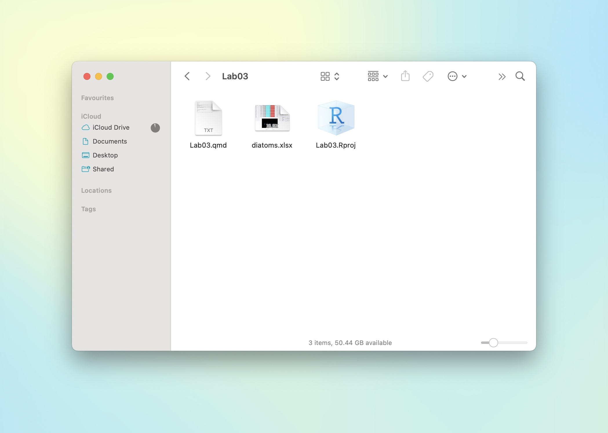
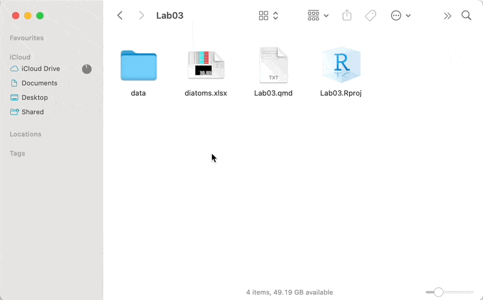

We will work with the diatoms.xlsx file in this section. Download the file from Canvas or your course materials.
1 Introduction
Starting this week you will be regularly reading data from both .csv and .xlsx files for your labs and assignments. We have found that many students struggle with this even though they have been taught how to do it in ENVX1002, so we have created this section as a refresher, focusing on the more complex .xlsx file format. If you already know how to import files like a pro, feel free to skip ahead.
Data import in R can be tricky because it involves learning how to work with file paths and working directories. In this section we will import the Diatoms worksheet from the diatoms.xlsx file. This data has been mixed with other information such as exploratory work and calculations, so we will need to specify the range of cells that we are interested in to import the data appropriately.

diatoms.xlsx file.
2 Find the working directory
Use getwd() to check the current working directory. This is the location on your computer where R will look for files.
- If you are working with a document file (like a Quarto or R Markdown file), the working directory is the location of the document file.
- If you are working with a script file (like an R script), the working directory might be different! You can use
setwd()to change the working directory, but this is not recommended1. Instead, use RStudio projects to set the working directory — see Tutorial 1 for more information or check out the documentation from Posit.
1 The setwd() function is not recommended because it is not reproducible: it can cause issues when sharing your code with others, or when working on different computers. Instead, use RStudio projects to set the working directory.
3 Move the file
Move diatoms.xlsx to the working directory. This will simplify the file path for data import.

diatoms.xlsx has been placed in the folder that contains an .Rproj file.
Then, use read_excel() from the readxl package to read the file, noting the file path, the worksheet name, and the range of cells that contain the data. Below we have assigned the output to an object called diatoms.
4 Moving the file and updating the path
Suppose you want to organise your project files and put all data files in a single folder. You can do this by creating a new folder in the same directory as your Quarto file, and moving the data file(s) into it.
Here, we create a folder called data and move the diatoms.xlsx file into it.

data (but it can be any other name, really), and move your data file(s) to this folder. You will have to update the path to the file in the read_excel() function to read the data from the new location.
We then update the path to the file in the read_excel() function by adding the folder name data/ to the file path.
5 Exercises
Here are some quick exercises to see if you can navigate your way around file paths in R.
- Create a new folder called
outputinside thedatafolder and move thediatoms.xlsxfile into it. How will you update thepathin theread_excel()function to reflect this change? - Rename the
outputfolder toraw. - Rename the
datafolder todiatomsand update the code.